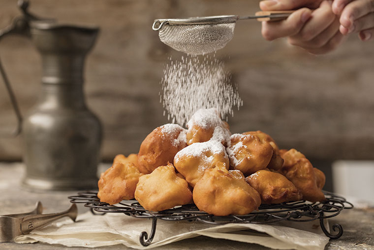

1 taza de azúcar (Puedes ajustar la cantidad a tu gusto)
1/2 taza de agua
jugo de 1 limón (opcional para dar un toque de acidez)
instrucciones
Pela el mamon y corta la pulpa
En una cacerola coloca el mamon, el azucar y el agua. Mezclalo muy bien
Cocinalo a fuego lento por 2hs. En ese momento el agua se comenzara a reducir, debes continuar la coccion revolviendo de
a ratos hasta que se cree el almivar y tenga la consistencia deseada.
Buñuelo Misioneros

Ingredientes
2 tazas de harina de trigo
2 cucharaditas de polvo de hornear
1/2 cucharadita de sal
2 huevos
1 taza de leche
Aceite para freír (puede ser aceite de maíz, girasol o similar)
Azúcar glas (para espolvorear, opcional)
2 cucharadas de azúcar
Instrucciones
En un bol tamiza la harina y mezcla con el azucar, la sal y el polvo de hornear.
En otro recipiente bate los huevos y mezcla con la leche.
Agrega la mezcla de la leche y los huevos con los ingredientes secos y revuelve hasta conseguir una masa
suave y homogenea